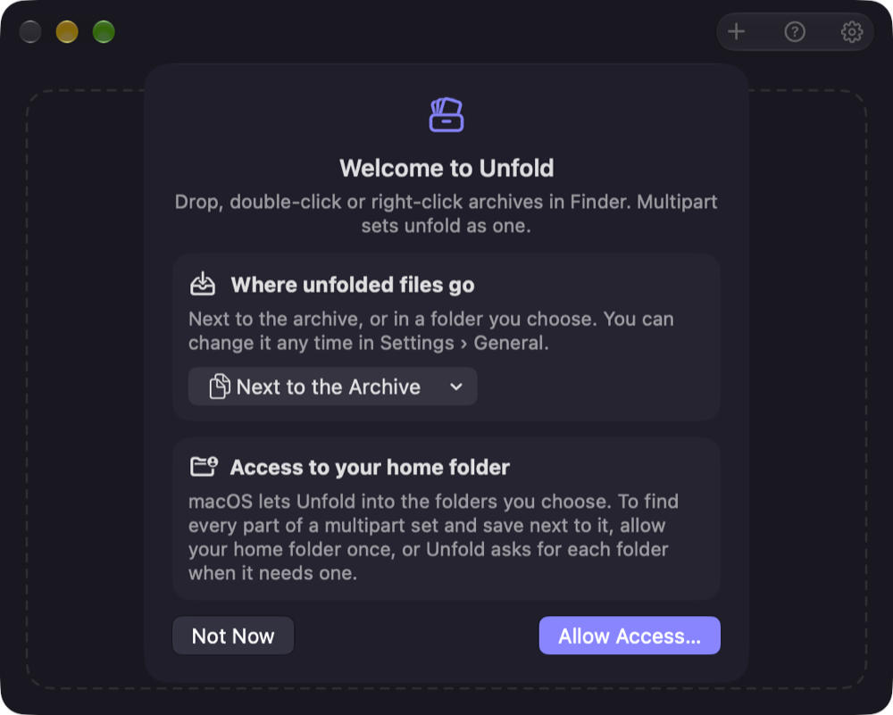
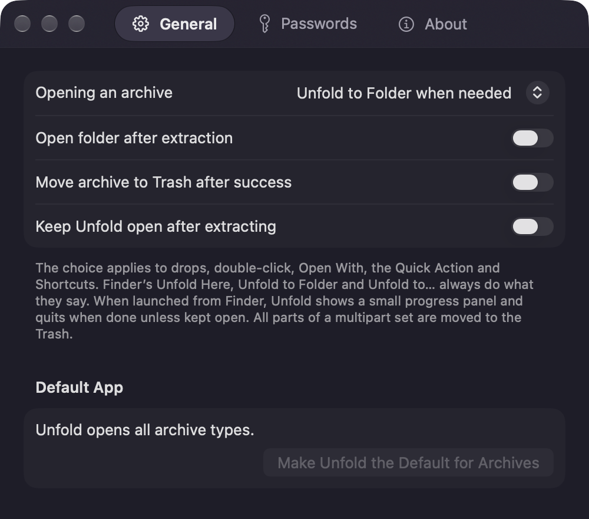
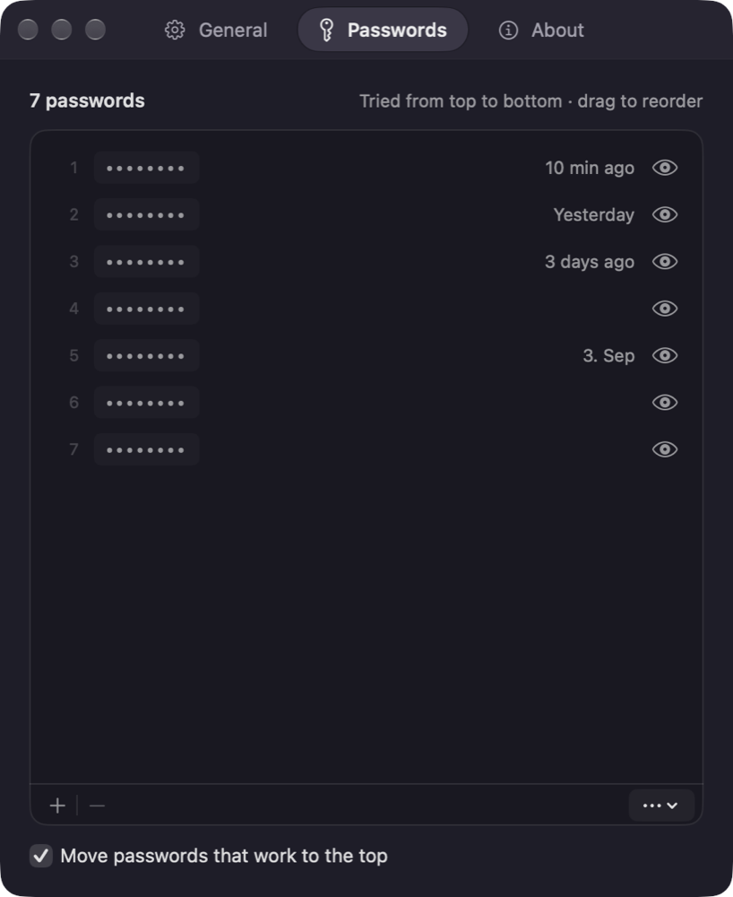
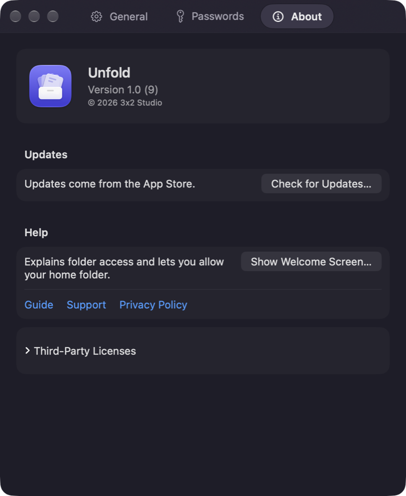
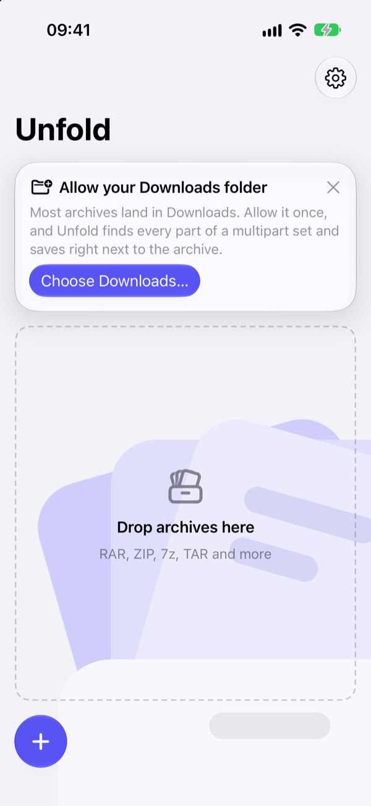
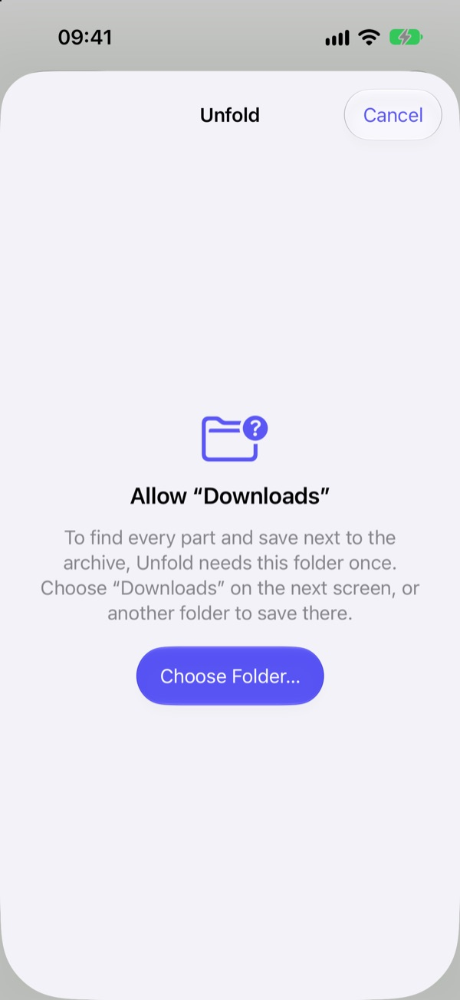
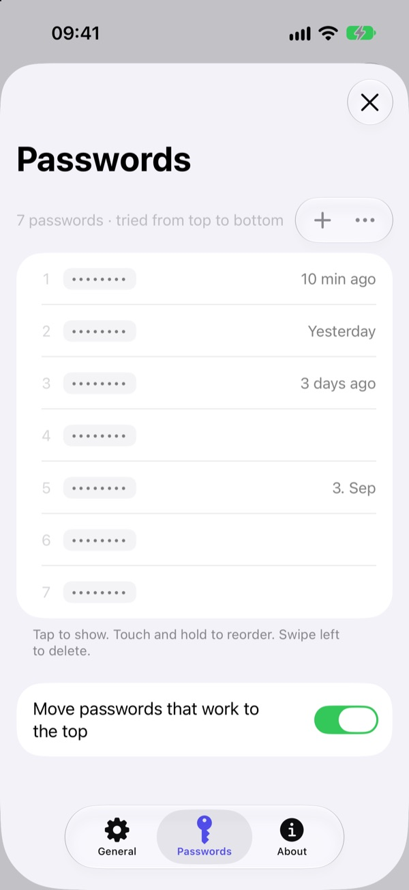
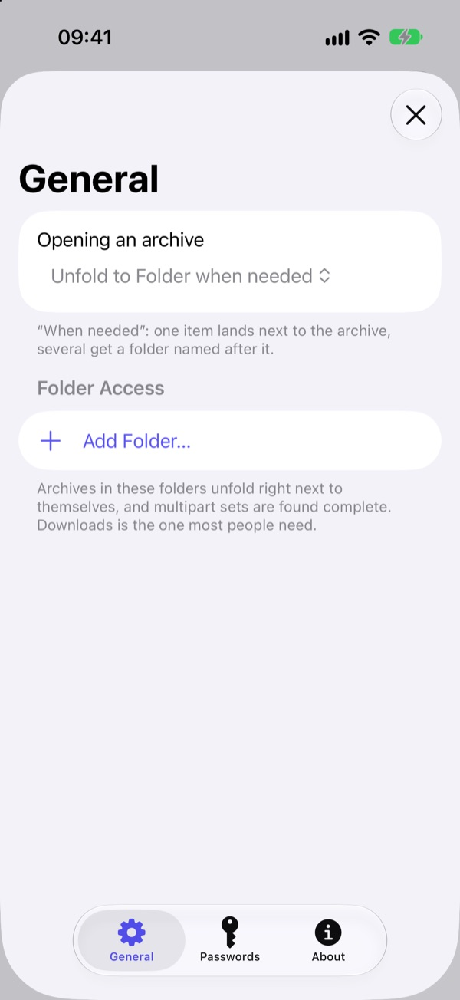
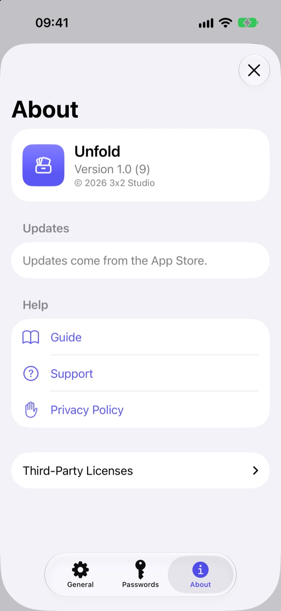

Unfold Guide
Unfold extracts RAR, ZIP, 7z, TAR and many more formats. Multipart archives (name.part1.rar, name.part2.rar …) unfold as one, whichever part you open.
The first start
The welcome screen asks two things, once:
- Where unfolded files go: next to the archive (the default), or Choose Folder… to pick a folder for everything. You can change it any time in Settings › General › Unfold to.
- Access to your home folder: macOS only lets apps into folders you allow, and Unfold needs the archive's folder to find the other parts of a multipart set and to save next to it. Allow your home folder once, or choose “Not Now”; Unfold then asks for each folder when it needs one.
Open the welcome screen again with ? in the main window or in Settings › About › Help.

Unfold from Finder
Right-click an archive (or several) in Finder:
- Unfold Here puts the contents next to the archive.
- Unfold to Folder puts them into a new folder named after the archive.
- Unfold to… asks where.
The menu needs Unfold's Finder extension: System Settings › General › Login Items & Extensions › Finder › Unfold. Without it, the same is under right-click › Quick Actions › Unfold.

Double-click, drop, or open
Double-click an archive, drop archives on the Unfold window, or click +. Each archive or multipart set is one row with its progress; a set of four parts shows as one row (“4 parts”). The newest archives are at the top, while the ones added first are unfolded first. Clear Finished tidies the list.
When a row is done, click the folder button on it, or the row itself, to show the result in Finder: a new folder opens, a single file is selected. If you have moved or deleted the result in the meantime, the button is dimmed.
Where the files go when you double-click or drop is set in Settings › General: Unfold to is next to the archive (the default) or a folder you choose, and Opening an archive sets how they are laid out. The default, Unfold to Folder only when needed, puts a single item right next to the archive and several items into a folder named after it, so you never get loose files everywhere or a folder with just one folder inside.

Out of your way
Started from Finder or by a double-click, Unfold only shows a small progress panel at the top right of the screen and quits a few seconds after it's done. To keep it running, click Show Window or turn on Settings › General › Keep Unfold open after extracting.

Encrypted archives
When an archive needs a password, Unfold first tries your saved passwords (the row shows “Trying saved passwords…”), then asks. Tick Remember in list to save the one you type for next time. A wrong password shakes the field instead of failing the archive.

Settings
Settings (the gear in the main window, or Unfold › Settings…) always opens on General:
- General: Unfold to (next to the archive or a folder you choose), how archives are laid out (Unfold to Folder only when needed, Unfold Here or Unfold to Folder), open the folder afterwards, move the archive to the Trash after success, keep Unfold open, make Unfold the default app for archives, and the folders Unfold may use.
- Passwords: passwords you use often. For an encrypted archive, Unfold tries them from top to bottom before asking and, if you like, moves the one that worked to the top. Add with +, drag to reorder, click the eye or press Space to reveal one. The ⋯ menu pastes, imports or exports a list (one password per line). The list is stored in your Keychain.
- About: the version and updates, the welcome screen, this guide, support, the privacy policy and the third-party licenses.



Shortcuts
The Shortcuts action Unfold Archives takes files and returns the extracted folders, for your own automations.
Allow your Downloads folder
Most archives land in Downloads. The tip at the top asks once: tap Choose Downloads… and confirm. After that Unfold finds every part of a multipart set there and saves right next to the archive. More folders can be added in Settings › General › Folder Access. Without a folder, Unfold still works: the files then go to On My iPhone › Unfold (On My iPad on iPad).


Unfold right in Files: Share › Unfold Archive
In Files, touch and hold an archive (or select several), tap Share and choose Unfold Archive in the row of actions. Unfold doesn't open: a small panel shows the progress, the files appear next to the archive, and the panel closes by itself when everything worked.
- The first time in a folder, it asks for it once (“Allow ‘Downloads’” › Choose Folder…). Choose that folder; or choose another one to save there instead. The app and the action share these folders, your settings and your saved passwords.
- For a multipart set, sharing any one part is enough once the folder is allowed.
- Shared from Mail, Safari or another app, the archive arrives as a copy, so Unfold asks where to save.
- Share › Unfold (the app icon in the top row) opens the app instead and adds the archive there.


In the app
Tap + at the bottom left and pick archives in Files; for a multipart set, select all its parts or just one in an allowed folder. Each archive is a row, the newest at the top. When one is done, tap its folder button or the row to show it in Files. Clear Finished at the bottom right tidies the list.
Passwords
Encrypted archive? Unfold tries your saved passwords first, then asks. Type it once; Remember in list saves it. In Settings › Passwords, + adds one (✓ saves it, ✕ cancels), ⋯ pastes, imports or exports a list, tap a password to show it, touch and hold to reorder, swipe left to delete.


Settings
The gear at the top right opens Settings, with the same three tabs as on the Mac: General (where archives go and the folders Unfold may use), Passwords and About (version, this guide, support, privacy and licenses). Close it with ✕.


Shortcuts
Unfold Archives is available in the Shortcuts app as well.
Didn't find what you need?
See Support & FAQ, or write to hello3x2@outlook.de.